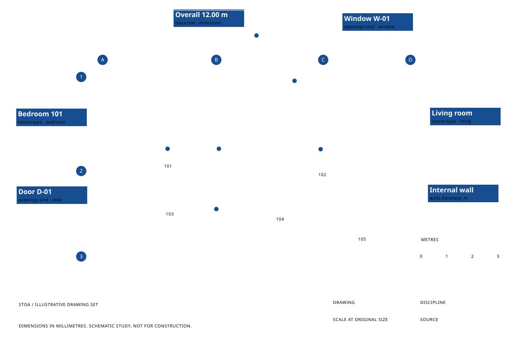

Drawings, made answerable.

FROM DRAWING TO DATA
Geometry with
a source.
Rooms, walls, and openings become structured data. Each entity carries a source reference and confidence, so an answering agent can trace a fact back to the drawing.
Coverage records what was analysed, what is partial, and what has not been read.
Read the building schema




Illustrative drawing set